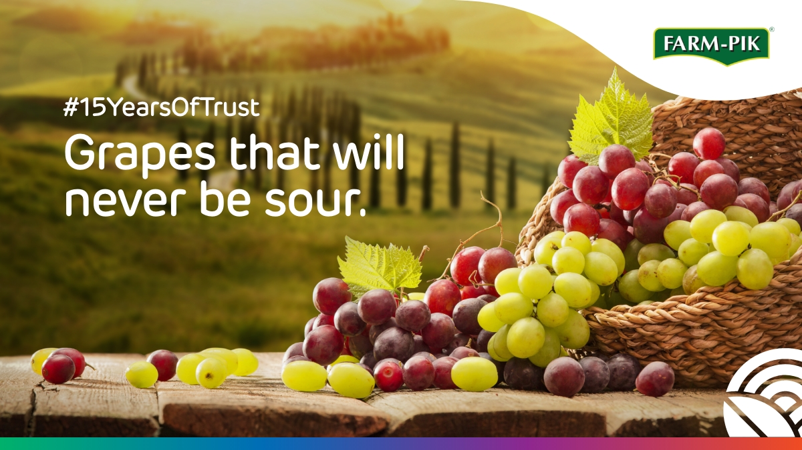
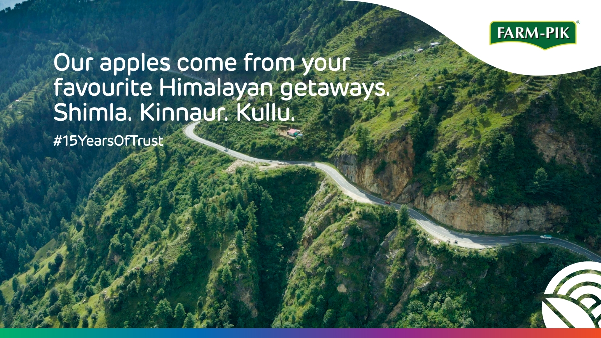
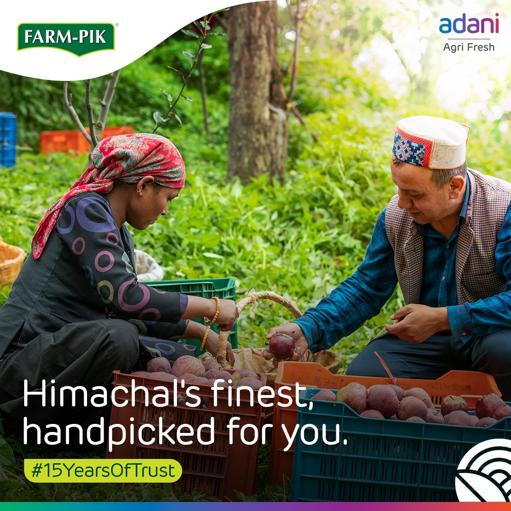
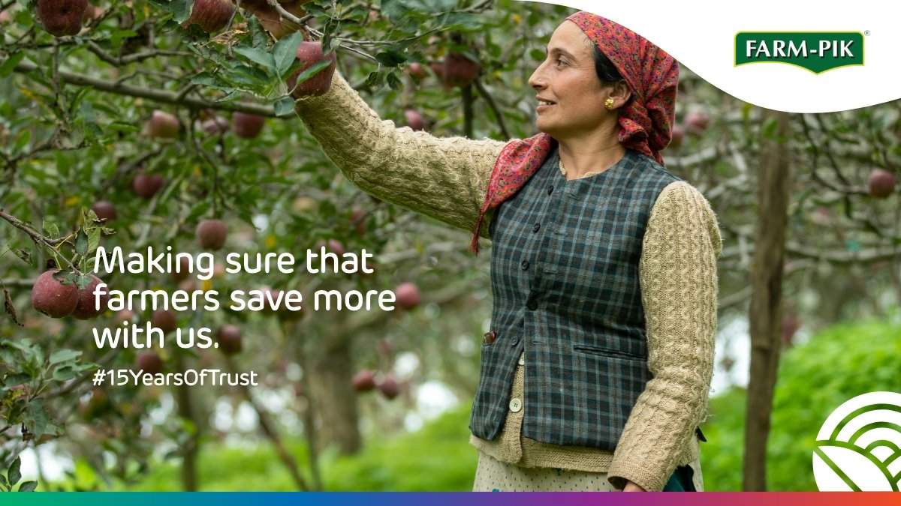
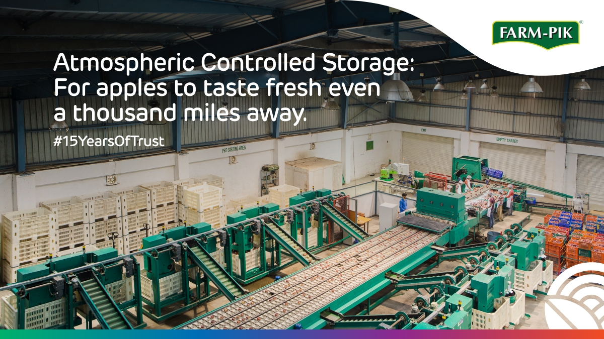
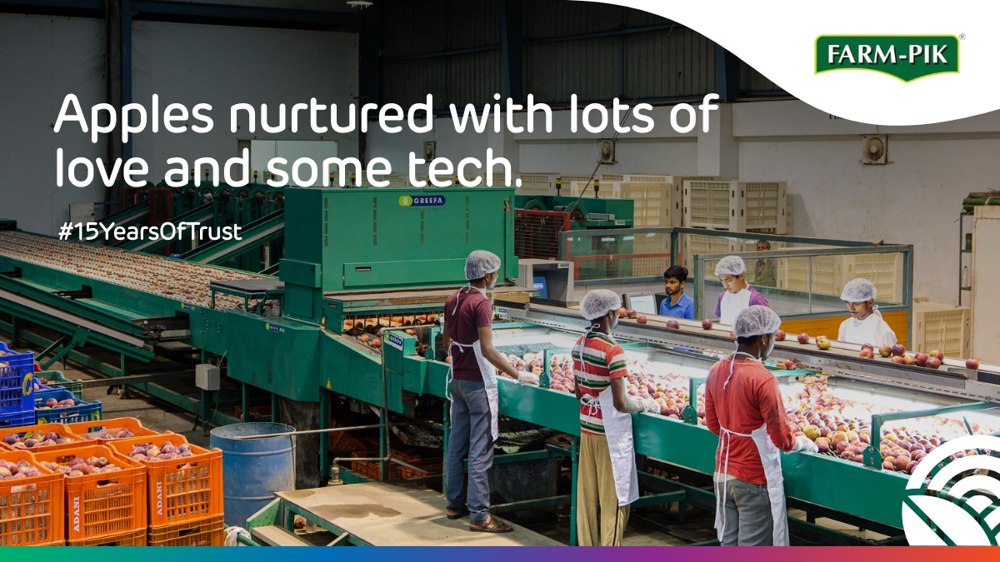
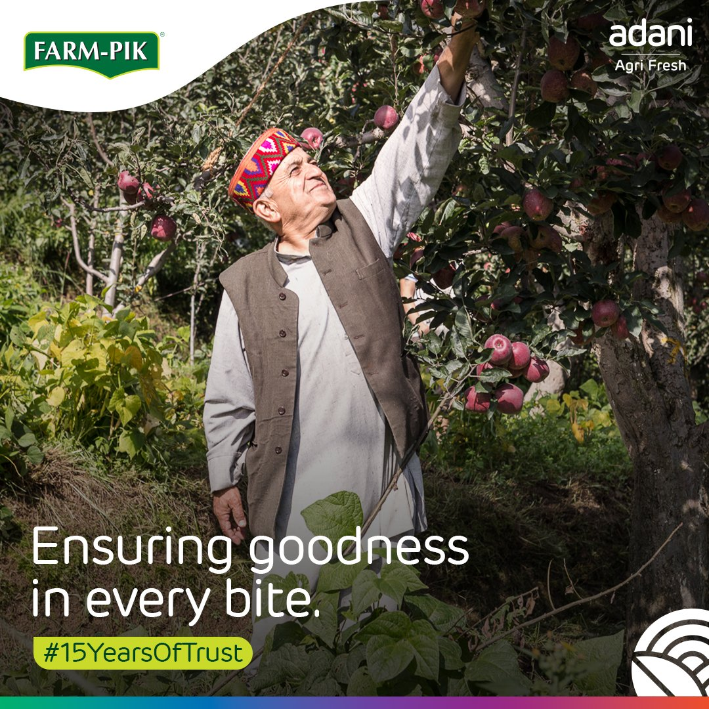
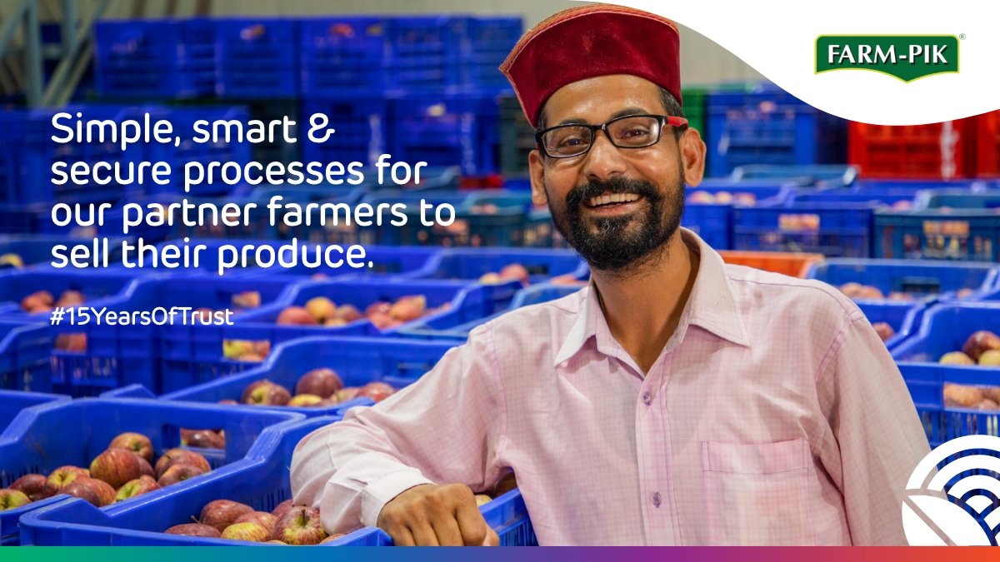

The narrative was moving faster than the organisation's voice.
Adani Agri Fresh works directly with apple farmers via procurement infrastructure, cold storage, procurement cycles, grading systems, and distribution channels. During farmer protests and increased public scrutiny, conversations about large corporations in agriculture were being shaped externally.
Farmers needed clarity on pricing, procurement cycles, and grievance handling. Urban audiences needed to see the human side of agricultural supply chains. Internal teams needed a unified communication voice.
"The problem was not visibility. The problem was trust and understanding."
How do you communicate with three different audiences at once?
A single PR campaign or isolated social media effort would not be enough. Communication had to meet each audience where they already were and connect messaging to operational reality.
Farmers
In remote regions with limited dependence on traditional social platforms. Needed local-language messaging, pricing transparency and direct grievance access.
Digital Audiences
Forming perceptions through fragmented and often incomplete information. Needed a human story behind the supply chain—faces, not facilities.
Media & Stakeholders
Requiring structured, credible and timely communication. Needed process transparency and institutional accountability—not press releases.
A three-layer communication system, not a one-time campaign.
"17,000+ Farmers onboarded to Digital Mandi + Partner App. Digitising procurement and participation workflows in one place."
Visual documentation & asset showcase.
The visual language prioritised process transparency and people-first storytelling: on-ground farmer moments, grading and storage details, logistics movement, and daily operational reality.










End-to-end strategy to execution.
Full ownership from architecture to monitoring—across three audience layers and multiple operational teams.
Outcomes that built a trust infrastructure.
"Agricultural communication during high-scrutiny moments is not a PR problem—it is a trust infrastructure problem."